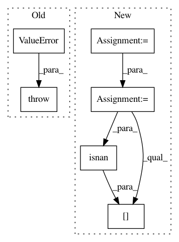

3cb45700156b63e786eb70909d3e1d6e1f21703a,pymc3/step_methods/hmc/base_hmc.py,BaseHMC,astep,#BaseHMC#Any#,109
Before Change
if not np.isfinite(start.energy):
self.potential.raise_ok(self._logp_dlogp_func._ordering.vmap)
raise ValueError("Bad initial energy: %s. The model "
"might be misspecified." % start.energy)
adapt_step = self.tune and self.adapt_step_size
step_size = self.step_adapt.current(adapt_step)
self.step_size = step_size
After Change
Perform a single HMC iteration.
p0 = self.potential.random()
start = self.integrator.compute_state(q0, p0)
model = self._model
if not np.isfinite(start.energy):
check_test_point = model.check_test_point()
error_logp = check_test_point.loc[(np.abs(check_test_point) >= 1e20) | np.isnan(check_test_point)]
self.potential.raise_ok(self._logp_dlogp_func._ordering.vmap)
logger.error("Bad initial energy, check any log probabilities that are inf or -inf, nan or very small:\n{}".format(error_logp.to_string()))
raise ValueError("Bad initial energy")
In pattern: SUPERPATTERN
Frequency: 3
Non-data size: 6
Instances
Project Name: pymc-devs/pymc3
Commit Name: 3cb45700156b63e786eb70909d3e1d6e1f21703a
Time: 2018-10-25
Author: peadarcoyle@googlemail.com
File Name: pymc3/step_methods/hmc/base_hmc.py
Class Name: BaseHMC
Method Name: astep
Project Name: nipy/dipy
Commit Name: a9fa0782dc1df24bd3e9c9ee9ddd3ab1dc9fd5e0
Time: 2013-09-11
Author: Samuel.St-Jean@usherbrooke.ca
File Name: dipy/segment/mask.py
Class Name:
Method Name: segment_from_cfa
Project Name: nipy/dipy
Commit Name: 990702bedcfd4bfd62b3c96f82a26fd8e1b6354a
Time: 2013-09-11
Author: Samuel.St-Jean@usherbrooke.ca
File Name: dipy/segment/mask.py
Class Name:
Method Name: segment_from_cfa